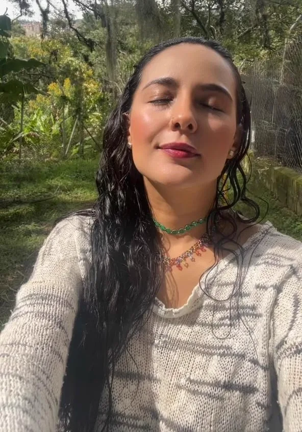

Mentora Holística · Transformación Interior · Medellín & Global
CATALINA ARANGO
El viaje consciente para integrar tu sombra, despertar tu luz y reconstruir el vínculo sagrado contigo.
¡Un gusto tenerte acá! Mi nombre es Catalina Arango Rivera. Tras 18 años en el mundo corporativo y atravesar mi propia ‘noche oscura del alma’, comprendí que el dolor no es un castigo, sino la brújula sagrada para recordar quién eres verdaderamente.
Este espacio nace como un refugio de contención real, integración de sombra y reconexión profunda con tu esencia. Aquí desarmamos la autoexigencia, reconciliamos tus heridas de infancia y ancestrales y activamos tu poder personal sin juicios ni dogmas.
«Para renacer en tu luz más expansiva, primero debes aprender a sentarte en compasión con tus sombras.»